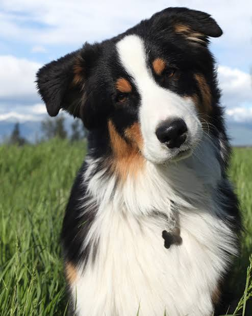
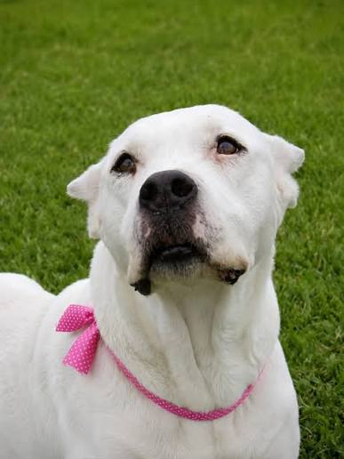

Miel
Cachorro de 4 meses. Juguetón y cariñoso, le encanta que le hablen.
Estos son los perros que ahora mismo esperan una familia. Puedes buscar por nombre o por carácter.
Cachorro de 4 meses. Juguetón y cariñoso, le encanta que le hablen.

Cachorro de 5 meses. Muy activo, ideal para paseos largos.

Adulta de 3 años. Atenta e inteligente, aprende rápido.

Adulta de 8 años. Tranquila y dulce, perfecta para sentarse a su lado.

Adulto de 6 años. Grande y bonachón, le gusta estar acompañado.